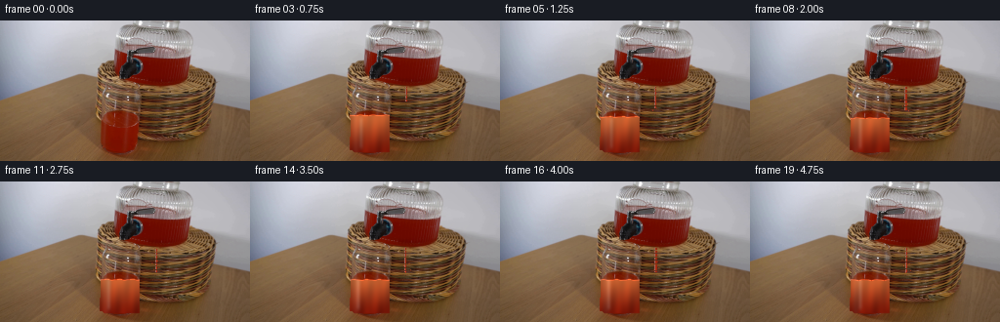
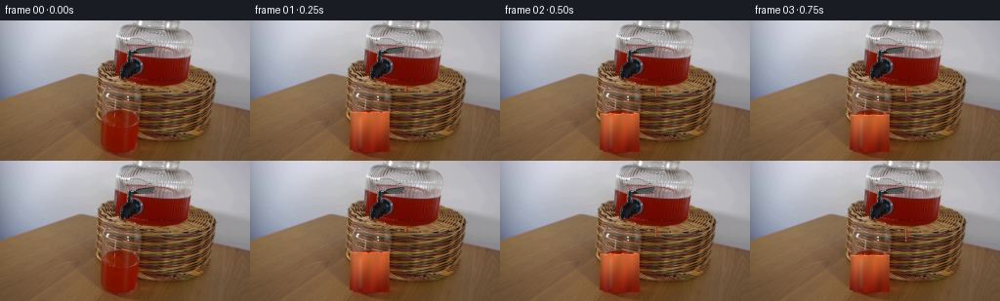

CODING AGENTS AS PIXEL WORLD MODELS
traex/DeepSeek-V4.1-Flash · 0069
点击播放 · 原生 RGB 像素
此结果可播放，但该运行尚未通过最终提交审核。页面展示不代表评测通过。
逐轮保存的候选
回放视频、检查图与代码变化。
每份候选均可单独播放。实际图片检查记录在下方工具轨迹中。
候选 01播放与检查图
点击播放 · 原生 RGB 像素


展开代码变化
--- 上一保存版本
+++ 本次保存版本
@@ -0,0 +1,215 @@
+from pathlib import Path
+
+import cv2
+import numpy as np
+from PIL import Image
+
+import artifact_io
+
+
+ROOT = Path(__file__).resolve().parent
+W, H, N = 256, 144, 20
+
+
+def smoothstep(edge0, edge1, x):
+ t = np.clip((x - edge0) / (edge1 - edge0), 0.0, 1.0)
+ return t * t * (3.0 - 2.0 * t)
+
+
+def make_glass_mask(source):
+ hsv = cv2.cvtColor(source, cv2.COLOR_RGB2HSV)
+ red = (
+ (((hsv[:, :, 0] < 13) | (hsv[:, :, 0] > 168)) & (hsv[:, :, 1] > 90))
+ & (hsv[:, :, 2] > 42)
+ )
+
+ # Keep the lower glass, excluding the loose red rim on its right.
+ seed = np.zeros((H, W), np.uint8)
+ seed[91:140, 102:143] = red[91:140, 102:143]
+ seed = cv2.morphologyEx(seed, cv2.MORPH_CLOSE, np.ones((5, 5), np.uint8))
+ count, labels, stats, _ = cv2.connectedComponentsWithStats(seed, 8)
+ component = 1 + np.argmax(stats[1:, cv2.CC_STAT_AREA])
+ seed = (labels == component).astype(np.uint8)
+
+ outline = np.zeros((H, W), np.uint8)
+ contour, _ = cv2.findContours(seed, cv2.RETR_EXTERNAL, cv2.CHAIN_APPROX_NONE)
+ cv2.drawContours(outline, contour, -1, 1, -1)
+ # Extend the top just enough to include the original half-full surface.
+ outline[90:96, 102:142] |= 1
+ kernel = np.ones((3, 3), np.uint8)
+ outline = cv2.morphologyEx(outline, cv2.MORPH_CLOSE, kernel)
+ return outline.astype(bool)
+
+
+def render_glass(frame, source, t):
+ yy, xx = np.mgrid[:H, :W]
+ glass = make_glass_mask(source)
+
+ # The existing liquid is a half-filled glass. Its upper surface settles first,
+ # then rises as the stream arrives.
+ old_level = 91.5
+ fill = 1.0 - np.exp(-t / 0.88)
+ new_level = old_level + 9.0 * fill
+ meniscus = new_level + 0.42 * np.sin(0.48 * xx + 1.1 * t) + 0.16 * np.sin(0.95 * xx - 2.0 * t)
+ interior = glass & (yy >= 94) & (yy < 135)
+ liquid = interior & (yy >= meniscus)
+
+ # Replace the old liquid region first so the changing level does not leave a
+ # frozen horizontal edge. The glass behind it is estimated from nearby pixels.
+ tint = np.array([0.36, 0.88, 0.95])
+ depth = smoothstep(93.0, 137.0, yy)
+ centre = np.exp(-((xx - 122.0) / 19.0) ** 2)
+ shimmer = (
+ 0.55 * np.sin(0.29 * xx + 1.8 * t + 0.12 * yy)
+ + 0.25 * np.sin(0.67 * xx - 2.5 * t)
+ )
+
+ base = np.array([0.72, 0.39, 0.20])
+ bright = np.array([0.94, 0.23, 0.055])
+ dark = np.array([0.37, 0.055, 0.018])
+ liquid_col = (
+ dark[None, None, :] * depth[:, :, None]
+ + base[None, None, :] * (1.0 - depth[:, :, None])
+ )
+ brightness = (0.80 + 0.16 * centre)[:, :, None]
+ glint_amount = (0.13 + 0.08 * shimmer)[:, :, None]
+ liquid_col = liquid_col * brightness + bright[None, None, :] * glint_amount
+ liquid_col += tint[None, None, :] * (0.055 * np.exp(-((xx - 108.0) / 3.5) ** 2))[:, :, None]
+ liquid_col = np.clip(liquid_col * 255.0, 0, 255)
+
+ # Feather the original color into the generated liquid at its boundary.
+ hard = liquid.astype(np.uint8)
+ feather = cv2.GaussianBlur(hard.astype(np.float32), (0, 0), 0.55)
+ feather = np.maximum(feather, hard * 0.78)
+ feather *= glass
+ alpha = np.clip(feather, 0.0, 1.0)[:, :, None]
+ frame[:] = np.rint(source * (1.0 - alpha) + liquid_col * alpha).astype(np.uint8)
+
+ # A narrow pale meniscus and a moving highlight sell the liquid's depth.
+ rim = np.exp(-((yy - meniscus) / 0.70) ** 2) * glass * (yy >= 91)
+ rim *= 0.62
+ highlight = np.exp(-((xx - (112.0 + 1.6 * np.sin(1.4 * t))) / 2.1) ** 2)
+ highlight *= smoothstep(95.0, 103.0, yy) * (1.0 - smoothstep(127.0, 134.0, yy))
+ highlight *= glass
+ frame = np.clip(
+ frame.astype(np.float32)
+ + rim[:, :, None] * np.array([112.0, 41.0, 22.0])[None, None, :]
+ + highlight[:, :, None] * np.array([12.0, 25.0, 27.0])[None, None, :],
+ 0,
+ 255,
+ ).astype(np.uint8)
+ return frame
+
+
+def make_stream_mask(source, t):
+ yy, xx = np.mgrid[:H, :W]
+ if t < 0.10:
+ return np.zeros((H, W), bool)
+
+ # Stream begins at the dispenser outlet around x=159, then falls into the
+ # glass. Its small lateral sway comes from surface tension at the outlet.
+ reach = np.clip((t - 0.10) / 1.30, 0.0, 1.0)
+ bottom = 69.0 + (92.0 - 69.0) * (reach ** 0.72)
+ center = 159.0 + 0.65 * np.sin(3.0 * t + 0.2) + 0.20 * np.sin(8.0 * t)
+ width = 1.20 + 0.22 * np.sin(3.4 * t)
+ stream = (
+ (yy >= 68.0)
+ & (yy <= bottom)
+ & (np.abs(xx - center) <= width)
+ )
+ # Break the stream with tiny ripples rather than making a rigid stripe.
+ stream &= (np.sin(1.75 * yy - 12.0 * t) > -0.74)
+ stream = cv2.GaussianBlur(stream.astype(np.float32), (0, 0), 0.45) > 0.20
+ return stream
+
+
+def render_stream(frame, source, t):
+ yy, xx = np.mgrid[:H, :W]
+ stream = make_stream_mask(source, t)
+ if not stream.any():
+ return frame
+
+ center = 159.0 + 0.65 * np.sin(3.0 * t + 0.2)
+ across = np.clip(1.0 - np.abs(xx - center) / 2.0, 0.0, 1.0)
+ vertical = np.clip((yy - 68.0) / 24.0, 0.0, 1.0)
+ shade = 0.70 + 0.20 * across + 0.12 * vertical
+ red = np.stack(
+ (
+ 185.0 * shade,
+ 27.0 + 23.0 * across,
+ 10.0 + 13.0 * across,
+ ),
+ axis=2,
+ )
+ # A one-pixel cool highlight on the left edge makes the stream look wet.
+ glint = stream & (xx < center) & (xx > center - 1.8)
+ red[glint] = red[glint] * 0.70 + np.array([41.0, 72.0, 77.0])
+
+ soft = cv2.GaussianBlur(stream.astype(np.float32), (0, 0), 0.55)
+ alpha = np.maximum(stream.astype(np.float32) * 0.92, soft * 0.82)[:, :, None]
+ return np.rint(frame * (1.0 - alpha) + red * alpha).clip(0, 255).astype(np.uint8)
+
+
+def render_contact_ripple(frame, t):
+ yy, xx = np.mgrid[:H, :W]
+ center_x = 159.0
+ surface_y = 95.0 + 0.25 * np.sin(0.48 * xx + 1.1 * t)
+ ring_radius = 2.0 + 15.0 * (1.0 - np.exp(-max(0.0, t - 0.9) / 1.7))
+ distance = np.sqrt((xx - center_x) ** 2 + ((yy - surface_y) * 2.25) ** 2)
+ ring = np.exp(-((distance - ring_radius) / 1.25) ** 2)
+ ring *= smoothstep(0.85, 1.45, t) * (1.0 - smoothstep(4.4, 5.0, t))
+ ring *= (yy > 91.0) & (yy < 104.0)
+ ring *= (xx > 102) & (xx < 144)
+ ring = cv2.GaussianBlur(ring.astype(np.float32), (0, 0), 0.55)
+ frame = np.clip(
+ frame.astype(np.float32)
+ + ring[:, :, None] * np.array([48.0, 28.0, 15.0])[None, None, :],
+ 0,
+ 255,
+ ).astype(np.uint8)
+ return frame
+
+
+def render_droplets(frame, t):
+ yy, xx = np.mgrid[:H, :W]
+ particles = []
+ for i in range(7):
+ phase = (t - 1.0 - 0.19 * i) % 0.63
+ if phase < 0 or phase > 0.42 or t < 1.0:
+ continue
+ y = 94.0 - 16.0 * phase / 0.42 + 8.0 * phase * phase
+ x = 159.0 + (i - 3) * 1.6 + 0.35 * np.sin(11.0 * phase + i)
+ particles.append((x, y, 0.55 + 0.15 * (i % 2)))
+ if not particles:
+ return frame
+ out = frame.astype(np.float32)
+ for x, y, radius in particles:
+ spot = np.exp(-(((xx - x) ** 2 + (yy - y) ** 2) / (radius ** 2)))
+ out += spot[:, :, None] * np.array([78.0, 16.0, 6.0])
+ return np.clip(out, 0, 255).astype(np.uint8)
+
+
+def generate():
+ source = np.array(Image.open(ROOT / "first_frame.png").convert("RGB"), dtype=np.uint8)
+ assert source.shape == (H, W, 3)
+ frames = np.empty((N, H, W, 3), dtype=np.uint8)
+ frames[0] = source
+
+ for index in range(1, N):
+ t = index / 4.0
+ frame = source.copy()
+ frame = render_glass(frame, source, t)
+ frame = render_contact_ripple(frame, t)
+ frame = render_stream(frame, source, t)
+ frame = render_droplets(frame, t)
+ frames[index] = frame
+
+ # The first frame is the untouched source image, as required.
+ frames[0] = source
+ return frames
+
+
+if __name__ == "__main__":
+ video = generate()
+ artifact_io.save(video, ROOT)
+ print(f"generated {video.shape} RGB frames at {ROOT}")
候选 02播放与检查图
点击播放 · 原生 RGB 像素

展开代码变化
--- 上一保存版本
+++ 本次保存版本
@@ -16,14 +16,14 @@
return t * t * (3.0 - 2.0 * t)
-def make_glass_mask(source):
+def make_glass_masks(source):
hsv = cv2.cvtColor(source, cv2.COLOR_RGB2HSV)
red = (
(((hsv[:, :, 0] < 13) | (hsv[:, :, 0] > 168)) & (hsv[:, :, 1] > 90))
& (hsv[:, :, 2] > 42)
)
- # Keep the lower glass, excluding the loose red rim on its right.
+ # Keep the lower glass, excluding the loose red reflection on its right.
seed = np.zeros((H, W), np.uint8)
seed[91:140, 102:143] = red[91:140, 102:143]
seed = cv2.morphologyEx(seed, cv2.MORPH_CLOSE, np.ones((5, 5), np.uint8))
@@ -31,135 +31,144 @@
component = 1 + np.argmax(stats[1:, cv2.CC_STAT_AREA])
seed = (labels == component).astype(np.uint8)
- outline = np.zeros((H, W), np.uint8)
+ glass = np.zeros((H, W), np.uint8)
contour, _ = cv2.findContours(seed, cv2.RETR_EXTERNAL, cv2.CHAIN_APPROX_NONE)
- cv2.drawContours(outline, contour, -1, 1, -1)
- # Extend the top just enough to include the original half-full surface.
- outline[90:96, 102:142] |= 1
- kernel = np.ones((3, 3), np.uint8)
- outline = cv2.morphologyEx(outline, cv2.MORPH_CLOSE, kernel)
- return outline.astype(bool)
-
-
-def render_glass(frame, source, t):
- yy, xx = np.mgrid[:H, :W]
- glass = make_glass_mask(source)
-
- # The existing liquid is a half-filled glass. Its upper surface settles first,
- # then rises as the stream arrives.
- old_level = 91.5
- fill = 1.0 - np.exp(-t / 0.88)
- new_level = old_level + 9.0 * fill
- meniscus = new_level + 0.42 * np.sin(0.48 * xx + 1.1 * t) + 0.16 * np.sin(0.95 * xx - 2.0 * t)
- interior = glass & (yy >= 94) & (yy < 135)
- liquid = interior & (yy >= meniscus)
-
- # Replace the old liquid region first so the changing level does not leave a
- # frozen horizontal edge. The glass behind it is estimated from nearby pixels.
- tint = np.array([0.36, 0.88, 0.95])
- depth = smoothstep(93.0, 137.0, yy)
- centre = np.exp(-((xx - 122.0) / 19.0) ** 2)
- shimmer = (
- 0.55 * np.sin(0.29 * xx + 1.8 * t + 0.12 * yy)
- + 0.25 * np.sin(0.67 * xx - 2.5 * t)
- )
-
- base = np.array([0.72, 0.39, 0.20])
- bright = np.array([0.94, 0.23, 0.055])
- dark = np.array([0.37, 0.055, 0.018])
- liquid_col = (
- dark[None, None, :] * depth[:, :, None]
- + base[None, None, :] * (1.0 - depth[:, :, None])
- )
- brightness = (0.80 + 0.16 * centre)[:, :, None]
- glint_amount = (0.13 + 0.08 * shimmer)[:, :, None]
- liquid_col = liquid_col * brightness + bright[None, None, :] * glint_amount
- liquid_col += tint[None, None, :] * (0.055 * np.exp(-((xx - 108.0) / 3.5) ** 2))[:, :, None]
- liquid_col = np.clip(liquid_col * 255.0, 0, 255)
-
- # Feather the original color into the generated liquid at its boundary.
- hard = liquid.astype(np.uint8)
- feather = cv2.GaussianBlur(hard.astype(np.float32), (0, 0), 0.55)
- feather = np.maximum(feather, hard * 0.78)
- feather *= glass
- alpha = np.clip(feather, 0.0, 1.0)[:, :, None]
- frame[:] = np.rint(source * (1.0 - alpha) + liquid_col * alpha).astype(np.uint8)
-
- # A narrow pale meniscus and a moving highlight sell the liquid's depth.
- rim = np.exp(-((yy - meniscus) / 0.70) ** 2) * glass * (yy >= 91)
- rim *= 0.62
- highlight = np.exp(-((xx - (112.0 + 1.6 * np.sin(1.4 * t))) / 2.1) ** 2)
- highlight *= smoothstep(95.0, 103.0, yy) * (1.0 - smoothstep(127.0, 134.0, yy))
- highlight *= glass
+ points = contour[0].reshape(-1, 2)
+ top_y = 80
+ top_left = 100.5 - 0.10 * (92 - top_y)
+ top_right = 145.0 + 0.10 * (92 - top_y)
+ points = np.vstack(
+ (
+ points,
+ np.array(
+ [
+ [round(top_left), top_y],
+ [round(top_right), top_y],
+ [round(top_right), 92],
+ [round(top_left), 92],
+ ],
+ dtype=np.int32,
+ ),
+ )
+ )
+ hull = cv2.convexHull(points.astype(np.int32))
+ cv2.drawContours(glass, [hull], -1, 1, -1)
+ interior = cv2.erode(glass, np.ones((3, 3), np.uint8), iterations=1).astype(bool)
+ original_liquid = seed.astype(bool)
+ return interior, original_liquid
+
+
+def render_glass(frame, source, t, glass):
+ yy, xx = np.mgrid[:H, :W]
+
+ # The source liquid starts at y~92. The surface rises only inside the upper
+ # half of the glass, leaving the original liquid texture and reflection intact.
+ fill_time = max(0.0, t - 0.55)
+ new_level = 91.0 - 5.8 * (1.0 - np.exp(-fill_time / 1.18))
+ wave = 0.32 * np.sin(0.34 * xx - 1.45 * t) + 0.12 * np.sin(0.83 * xx + 2.0 * t)
+ surface = new_level + wave
+
+ band = glass & (yy >= surface) & (yy < 91.0)
+ sample_y = np.clip(yy + 6.0, 0, H - 1).astype(np.int32)
+ sample_x = np.broadcast_to(xx, (H, W)).astype(np.int32)
+ sampled = source[sample_y, sample_x].astype(np.float32)
+
+ # Carry the photographed red texture into the new band, with a slight
+ # vertical falloff toward the fresh surface.
+ band_depth = np.clip((yy - surface) / np.maximum(1.0, 91.0 - surface), 0.0, 1.0)
+ bright_red = np.array([132.0, 43.0, 18.0])
+ sampled = sampled * (0.78 + 0.18 * band_depth[:, :, None])
+ sampled += bright_red[None, None, :] * (0.08 * (1.0 - band_depth[:, :, None]))
+ sampled += (
+ 2.0 * np.sin(0.65 * xx + 1.7 * t - 0.20 * yy)[:, :, None]
+ * np.array([1.0, 0.35, 0.20])[None, None, :]
+ )
+ sampled = np.clip(sampled, 0, 255)
+
+ alpha = band.astype(np.float32)
+ alpha = cv2.GaussianBlur(alpha, (0, 0), 0.45)
+ alpha = np.maximum(alpha, band.astype(np.float32) * 0.82)
+ alpha *= smoothstep(90.0, 91.0, yy) * 0.25 + 0.75
+ alpha = np.clip(alpha, 0.0, 1.0)[:, :, None]
+ frame[:] = np.rint(source * (1.0 - alpha) + sampled * alpha).astype(np.uint8)
+
+ # A one-pixel meniscus, brightest near the left side where the glass catches
+ # the room light, makes the rising level legible without flattening the liquid.
+ line = np.exp(-((yy - surface) / 0.62) ** 2) * glass
+ line *= 0.56 + 0.24 * np.exp(-((xx - 108.0) / 7.0) ** 2)
+ line = cv2.GaussianBlur(line.astype(np.float32), (0, 0), 0.35)
frame = np.clip(
frame.astype(np.float32)
- + rim[:, :, None] * np.array([112.0, 41.0, 22.0])[None, None, :]
- + highlight[:, :, None] * np.array([12.0, 25.0, 27.0])[None, None, :],
+ + line[:, :, None] * np.array([118.0, 55.0, 32.0])[None, None, :],
0,
255,
).astype(np.uint8)
return frame
-def make_stream_mask(source, t):
- yy, xx = np.mgrid[:H, :W]
- if t < 0.10:
+def stream_path(y, surface, t):
+ denom = max(1.0, surface - 65.0)
+ u = np.clip((y - 65.0) / denom, 0.0, 1.0)
+ bend = u * u * (3.0 - 2.0 * u)
+ center = 143.0 - 17.0 * bend + 0.45 * np.sin(3.1 * t + 0.3) * u
+ return center
+
+
+def make_stream_mask(source, surface, t):
+ yy, xx = np.mgrid[:H, :W]
+ if t < 0.12:
return np.zeros((H, W), bool)
- # Stream begins at the dispenser outlet around x=159, then falls into the
- # glass. Its small lateral sway comes from surface tension at the outlet.
- reach = np.clip((t - 0.10) / 1.30, 0.0, 1.0)
- bottom = 69.0 + (92.0 - 69.0) * (reach ** 0.72)
- center = 159.0 + 0.65 * np.sin(3.0 * t + 0.2) + 0.20 * np.sin(8.0 * t)
- width = 1.20 + 0.22 * np.sin(3.4 * t)
+ reach = smoothstep(0.12, 0.92, t)
+ bottom = 65.0 + (surface - 65.0) * reach
+ center = stream_path(yy, surface, t)
+ width = 1.05 + 0.16 * np.sin(3.4 * t)
stream = (
- (yy >= 68.0)
+ (yy >= 64.0)
& (yy <= bottom)
& (np.abs(xx - center) <= width)
)
- # Break the stream with tiny ripples rather than making a rigid stripe.
- stream &= (np.sin(1.75 * yy - 12.0 * t) > -0.74)
- stream = cv2.GaussianBlur(stream.astype(np.float32), (0, 0), 0.45) > 0.20
+ stream &= (np.sin(1.45 * yy - 10.0 * t) > -0.78)
+ stream = cv2.GaussianBlur(stream.astype(np.float32), (0, 0), 0.42) > 0.18
return stream
-def render_stream(frame, source, t):
- yy, xx = np.mgrid[:H, :W]
- stream = make_stream_mask(source, t)
+def render_stream(frame, source, surface, t):
+ yy, xx = np.mgrid[:H, :W]
+ stream = make_stream_mask(source, surface, t)
if not stream.any():
return frame
- center = 159.0 + 0.65 * np.sin(3.0 * t + 0.2)
- across = np.clip(1.0 - np.abs(xx - center) / 2.0, 0.0, 1.0)
- vertical = np.clip((yy - 68.0) / 24.0, 0.0, 1.0)
- shade = 0.70 + 0.20 * across + 0.12 * vertical
+ center = stream_path(yy, surface, t)
+ across = np.clip(1.0 - np.abs(xx - center) / 1.7, 0.0, 1.0)
+ vertical = np.clip((yy - 65.0) / 27.0, 0.0, 1.0)
+ shade = 0.76 + 0.18 * across + 0.08 * vertical
red = np.stack(
(
- 185.0 * shade,
- 27.0 + 23.0 * across,
- 10.0 + 13.0 * across,
+ 193.0 * shade,
+ 28.0 + 22.0 * across,
+ 10.0 + 12.0 * across,
),
axis=2,
)
# A one-pixel cool highlight on the left edge makes the stream look wet.
- glint = stream & (xx < center) & (xx > center - 1.8)
- red[glint] = red[glint] * 0.70 + np.array([41.0, 72.0, 77.0])
+ glint = stream & (xx < center) & (xx > center - 1.4)
+ red[glint] = red[glint] * 0.72 + np.array([36.0, 58.0, 61.0])
soft = cv2.GaussianBlur(stream.astype(np.float32), (0, 0), 0.55)
alpha = np.maximum(stream.astype(np.float32) * 0.92, soft * 0.82)[:, :, None]
return np.rint(frame * (1.0 - alpha) + red * alpha).clip(0, 255).astype(np.uint8)
-def render_contact_ripple(frame, t):
- yy, xx = np.mgrid[:H, :W]
- center_x = 159.0
- surface_y = 95.0 + 0.25 * np.sin(0.48 * xx + 1.1 * t)
- ring_radius = 2.0 + 15.0 * (1.0 - np.exp(-max(0.0, t - 0.9) / 1.7))
- distance = np.sqrt((xx - center_x) ** 2 + ((yy - surface_y) * 2.25) ** 2)
+def render_contact_ripple(frame, t, surface):
+ yy, xx = np.mgrid[:H, :W]
+ center_x = 126.0
+ ring_radius = 1.5 + 10.0 * (1.0 - np.exp(-max(0.0, t - 0.85) / 1.6))
+ distance = np.sqrt((xx - center_x) ** 2 + ((yy - surface) * 2.4) ** 2)
ring = np.exp(-((distance - ring_radius) / 1.25) ** 2)
ring *= smoothstep(0.85, 1.45, t) * (1.0 - smoothstep(4.4, 5.0, t))
- ring *= (yy > 91.0) & (yy < 104.0)
- ring *= (xx > 102) & (xx < 144)
+ ring *= (yy > surface - 1.0) & (yy < surface + 4.0)
+ ring *= (xx > 108) & (xx < 143)
ring = cv2.GaussianBlur(ring.astype(np.float32), (0, 0), 0.55)
frame = np.clip(
frame.astype(np.float32)
@@ -170,15 +179,15 @@
return frame
-def render_droplets(frame, t):
+def render_droplets(frame, t, surface):
yy, xx = np.mgrid[:H, :W]
particles = []
for i in range(7):
phase = (t - 1.0 - 0.19 * i) % 0.63
if phase < 0 or phase > 0.42 or t < 1.0:
continue
- y = 94.0 - 16.0 * phase / 0.42 + 8.0 * phase * phase
- x = 159.0 + (i - 3) * 1.6 + 0.35 * np.sin(11.0 * phase + i)
+ y = surface - 12.0 * phase / 0.42 + 5.0 * phase * phase
+ x = 128.0 + (i - 3) * 1.25 + 0.35 * np.sin(11.0 * phase + i)
particles.append((x, y, 0.55 + 0.15 * (i % 2)))
if not particles:
return frame
@@ -194,14 +203,17 @@
assert source.shape == (H, W, 3)
frames = np.empty((N, H, W, 3), dtype=np.uint8)
frames[0] = source
+ glass, _ = make_glass_masks(source)
for index in range(1, N):
t = index / 4.0
frame = source.copy()
- frame = render_glass(frame, source, t)
- frame = render_contact_ripple(frame, t)
- frame = render_stream(frame, source, t)
- frame = render_droplets(frame, t)
+ frame = render_glass(frame, source, t, glass)
+ fill_time = max(0.0, t - 0.55)
+ surface_level = 91.0 - 5.8 * (1.0 - np.exp(-fill_time / 1.18))
+ frame = render_contact_ripple(frame, t, surface_level)
+ frame = render_stream(frame, source, surface_level, t)
+ frame = render_droplets(frame, t, surface_level)
frames[index] = frame
# The first frame is the untouched source image, as required.
候选 03播放与检查图
可观测工具轨迹
实际执行的命令与返回图片。
命令 1exit 0
/bin/bash -c "pwd && rg --files -g '"'!*'"\\.git/*' | sed -n '1,200p'"
命令 2exit 0
/bin/bash -c "sed -n '1,240p' prompt.txt"
命令 3exit 0
/bin/bash -c "sed -n '1,280p' GENERATION_RULES.md"
命令 4exit 0
/bin/bash -c "file first_frame.png 2>/dev/null; identify -verbose first_frame.png 2>/dev/null | sed -n '1,100p'; ffprobe -v error -show_streams -show_format first_frame.png 2>/dev/null | sed -n '1,160p'"
命令 5exit 0
/bin/bash -c 'ls -l first_frame.png prompt.txt GENERATION_RULES.md artifact_io.py player_template.html'
命令 6exit 0
/bin/bash -c "sed -n '1,260p' artifact_io.py"
命令 7exit 0
/bin/bash -c "sed -n '1,260p' player_template.html"
命令 8exit 0
/bin/bash -c "python - <<'PY'
from PIL import Image
im=Image.open('first_frame.png')
print(im.mode, im.size, im.format)
print(im.getextrema())
PY"命令 9exit 0
/bin/bash -c "python - <<'PY'
from PIL import Image
import numpy as np
im=np.asarray(Image.open('first_frame.png')).astype(float)
# quantized palette
q=(im//24*24).clip(0,255).astype(np.uint8).reshape(-1,3)
from collections import Counter
c=Counter(map(tuple,q))
print('top colors')
for col,n in c.most_common(30): print(col,n,round(n/(256*144)*100,2))
# ascii with color category based hsv
import colorsys
hsv=np.array([colorsys.rgb_to_hsv(*(p/255)) for p in im.reshape(-1,3)]).reshape(im.shape[0],im.shape[1],3)
lum=im@np.array([.2126,.7152,.0722])
# sample 64x36 blocks average
for y0 in range(0,144,4):
line=''
for x0 in range(0,256,4):
rgb=im[y0:y0+4,x0:x0+4].mean((0,1)); h,s,v=hsv[y0:y0+4,x0:x0+4].mean((0,1)); l=lum[y0:y0+4,x0:x0+4].mean()
if s>.48 and h<.04 or s>.48 and h>.96:
ch='R' if l<110 else 'r'
elif s>.35 and .03<=h<.12:
ch='O' if l<140 else 'o'
elif s>.22 and .12<=h<.20:
ch='Y' if l<150 else 'y'
elif s>.18 and .20<=h<.42:
ch='G' if l<150 else 'g'
elif s>.18 and .42<=h<.72:
ch='B' if l<120 else 'b'
elif l<30: ch=' '
elif l<55: ch='.'
elif l<80: ch=':'
elif l<110: ch='*'
elif l<150: ch='O'
elif l<195: ch='#'
elif l<225: ch='%'
else: ch='@'
line+=ch
print(line)
PY"命令 10exit 0
/bin/bash -c "python - <<'PY'
try:
import cv2; print('cv2',cv2.__version__)
except Exception as e: print('no cv2',e)
try:
import scipy; print('scipy',scipy.__version__)
except Exception as e: print('no scipy',e)
PY"命令 11exit 0
/bin/bash -c "python - <<'PY'
import cv2, numpy as np
from PIL import Image
im=np.array(Image.open('first_frame.png'))
hsv=cv2.cvtColor(im,cv2.COLOR_RGB2HSV)
# print connected red components various thresholds
for name, mask in [
('red', ((hsv[:,:,0]<8)|(hsv[:,:,0]>172)) & (hsv[:,:,1]>100) & (hsv[:,:,2]>50)),
('redhi', ((hsv[:,:,0]<10)|(hsv[:,:,0]>170)) & (hsv[:,:,1]>150) & (hsv[:,:,2]>70)),
('brown',(hsv[:,:,0]>=8)&(hsv[:,:,0]<28)&(hsv[:,:,1]>70)&(hsv[:,:,2]>30)),
('dark',(hsv[:,:,2]<70)),
]:
n,lab,stats,cent=cv2.connectedComponentsWithStats(mask.astype('uint8'),8)
print('\\n',name)
for i in np.argsort(stats[1:,4])[::-1][:20]+1:
x,y,w,h,a=stats[i]; print(f'{a:5d} box {x},{y} {w}x{h} center {cent[i].round(1)}')
PY"命令 12exit 0
/bin/bash -c "python - <<'PY'
import cv2, numpy as np
from PIL import Image
im=np.array(Image.open('first_frame.png'))
hsv=cv2.cvtColor(im,cv2.COLOR_RGB2HSV)
mask=(((hsv[:,:,0]<12)|(hsv[:,:,0]>170)) & (hsv[:,:,1]>105) & (hsv[:,:,2]>45)).astype('uint8')
print('red row runs:')
for y in range(144):
xs=np.where(mask[y])[0]
if len(xs):
runs=[]; s=xs[0]; p=xs[0]
for x in xs[1:]:
if x>p+1: runs.append((s,p));s=x
p=x
runs.append((s,p))
if y%2==0: print(f'{y:3d}: '+ ' '.join(f'{a}-{b}' for a,b in runs if b-a>=1))
PY"命令 13exit 0
/bin/bash -c "python - <<'PY'
import numpy as np
from PIL import Image
im=np.array(Image.open('first_frame.png'))
# nearest local median for key samples in regions
for y in [25,30,35,40,45,50,55,60,65,70,75,78,80,82,84,86,88,90,92,94,96,98,100,102,104,106,108,110,112,114,116,118,120,122,124,126,128,130,132,134,136,138,140,142]:
print('y',y)
for x in range(96,216,4):
r,g,b=im[y,x]
# bright red mask rough
tag='R' if r>g*1.5 and r>b*1.7 and r>50 else ''
print(f'{x}:{r:02x}{g:02x}{b:02x}{tag}',end=' ')
print()
PY"命令 14exit 0
/bin/bash -c "python - <<'PY'
import cv2, numpy as np
from PIL import Image
im=np.array(Image.open('first_frame.png'))
hsv=cv2.cvtColor(im,cv2.COLOR_RGB2HSV)
# 2x ASCII sampled every 2x2, classes based dominant appearance; upper 0-90
for y in range(20,92,2):
line=''
for x in range(96,208,2):
p=im[y:y+2,x:x+2].mean((0,1)); h,s,v=hsv[y:y+2,x:x+2].mean((0,1)); r,g,b=p
if r>70 and r>g*2.2 and r>b*2.5: c='R'
elif r>40 and r>g*1.7 and r>b*2: c='r'
elif v<30: c='@'
elif v<55: c='#'
elif v<80: c='*'
elif v<115: c='o'
elif v<155: c='+'
elif v<195: c='-'
elif v<225: c='.'
else: c=' '
line+=c
print(f'{y:3d} {line}')
PY"命令 15exit 0
/bin/bash -c "python - <<'PY'
from PIL import Image
import numpy as np, cv2
im=np.array(Image.open('first_frame.png'))
# edge stats vertical/horiz to identify jar/glass boundaries
for y in [30,35,40,45,50,55,60,65,70,75,78,80,82,84,86,88,90,92,94,96,98,100,102,104,106,108,110,112,114,116,118,120,122,124,126,128,130,132,134,136,138,140]:
# print RGB around x 96..210 at 2 step luminance
vals=(im[y].astype(float)@np.array([.2126,.7152,.0722]))
print(f'{y:3d}', ' '.join(f'{vals[x]:3.0f}' for x in range(96,216,2)))
PY"命令 16exit 0
/bin/bash -c "python - <<'PY'
import numpy as np
from PIL import Image
im=np.array(Image.open('first_frame.png'))
# write zoomed crops for visual inspection by pixels only later; current numeric color transitions
for y in [24,25,26,27,28,29,30,31,32,33,34,35,36,37,38,39,40,41,42,43,44,45,46,47,48,49,50,51,52,53,54,55,56,57,58,59,60,61,62,63,64,65,66,67,68,69,70]:
xs=[]
for x in range(90,205):
r,g,b=im[y,x]
if r>g*1.8 and r>b*2 and r>45: xs.append(x)
if xs: print(y,min(xs),max(xs),len(xs))
PY"命令 17exit 0
/bin/bash -c "python - <<'PY'
import numpy as np
from PIL import Image
im=np.array(Image.open('first_frame.png'))
# print rows values of red mask as detailed char at 1 px for top region y30-72, x110-202
for y in range(30,72):
line=''
for x in range(110,202):
r,g,b=im[y,x].astype(int)
if r>g*1.8 and r>b*2 and r>45: c='R'
elif r>g*1.4 and r>b*1.7 and r>35: c='r'
elif max(r,g,b)<35: c='@'
elif max(r,g,b)<65: c='#'
elif max(r,g,b)<100: c='o'
elif max(r,g,b)<140: c='+'
elif max(r,g,b)<180: c='-'
elif max(r,g,b)<215: c='.'
else: c=' '
line+=c
print(f'{y:2d} {line}')
PY"命令 18exit 0
/bin/bash -c "find . -maxdepth 2 -type f -printf '%p %s\\n' | sort"
命令 19exit 1
/bin/bash -c 'python generate.py'
命令 20exit 0
/bin/bash -c 'python generate.py'
命令 21exit 0
/bin/bash -c "python - <<'PY'
import numpy as np
from PIL import Image
src=np.array(Image.open('first_frame.png'))
frames=np.stack([np.array(Image.open(f'frames/{i:02d}.png')) for i in range(20)])
print('shape',frames.shape,frames.dtype)
print('frame0 exact',np.array_equal(frames[0],src),'maxdiff',np.abs(frames[0].astype(int)-src).max())
for i in range(1,20):
d=np.abs(frames[i].astype(int)-frames[i-1].astype(int)).max(2)
ys,xs=np.where(d>0)
print(f'{i:02d} t={i/4:.2f} changed={len(xs):5d} bbox=({xs.min()},{ys.min()})-({xs.max()},{ys.max()}) mean={d.mean():.3f} max={d.max()}')
PY"命令 22exit 0
/bin/bash -c "python - <<'PY'
import numpy as np
from PIL import Image
for idx in [0,4,9,14,19]:
im=np.array(Image.open(f'frames/{idx:02d}.png'))
print('\\nFRAME',idx)
for y in range(88,141,2):
line=''
for x in range(96,150,2):
p=im[y:y+2,x:x+2].mean((0,1)); r,g,b=p
if r>100 and r>g*2.4 and r>b*2.8: c='R'
elif r>60 and r>g*1.8 and r>b*2.0: c='r'
elif max(p)<25: c='@'
elif max(p)<50: c='#'
elif max(p)<75: c='*'
elif max(p)<105: c='o'
elif max(p)<140: c='+'
elif max(p)<175: c='-'
elif max(p)<210: c='.'
else: c=' '
line+=c
print(line)
PY"命令 23exit 0
/bin/bash -c "python - <<'PY'
from PIL import Image
for idx in [0,4,9,14,19]:
im=Image.open(f'frames/{idx:02d}.png')
im.crop((90,20,210,144)).resize((480,496),Image.Resampling.NEAREST).save(f'.tmp/crop_{idx:02d}.png')
PY
ls -l .tmp/crop_*.png"命令 24exit 0
/bin/bash -c "python - <<'PY'
from PIL import Image
import numpy as np
# numeric check: row-average RGB in interior glass by row for frames
for idx in [0,4,9,14,19]:
im=np.array(Image.open(f'frames/{idx:02d}.png')).astype(float)
print('\\nframe',idx)
for y in range(88,138,2):
p=im[y,105:140].mean(0)
print(f'{y:3d}:{p[0]:.0f},{p[1]:.0f},{p[2]:.0f}',end=' ')
if (y-88)%10==8: print()
PY"命令 25exit 0
/bin/bash -c "python - <<'PY'
import cv2, numpy as np
from PIL import Image
im=np.array(Image.open('first_frame.png'))
g=cv2.cvtColor(im,cv2.COLOR_RGB2GRAY).astype(float)
g=cv2.GaussianBlur(g,(3,3),0)
gx=np.abs(cv2.Sobel(g,cv2.CV_64F,1,0,ksize=3)); gy=np.abs(cv2.Sobel(g,cv2.CV_64F,0,1,ksize=3))
# strongest vertical edges around glass x=90..155 for each row
print('row, top vertical edge x positions')
for y in range(76,140,2):
xs=np.argsort(gx[y,90:160])[::-1][:8]+90
vals=[(int(x),round(gx[y,x])) for x in sorted(xs)]
print(y, vals)
print('\\nhorizontal edge positions x=95..150')
for y in range(74,141,2):
xs=np.argsort(gy[y,95:150])[::-1][:5]+95
print(y,[(int(x),round(gy[y,x])) for x in sorted(xs)])
PY"命令 26exit 0
/bin/bash -c "python - <<'PY'
from PIL import Image
import numpy as np, cv2
im=np.array(Image.open('first_frame.png'))
# print a 1px map x=100..205 y=10..92, downsample color to letters. use 1px horizontal, 2px vertical
for y in range(10,94,2):
line=''
for x in range(96,208):
p=im[y:y+2,x:x+1].mean((0,1)); r,g,b=p; h,s,v=cv2.cvtColor(np.uint8([[[*p]]]),cv2.COLOR_RGB2HSV)[0,0]
if r>70 and r>g*2.1 and r>b*2.3: c='R'
elif r>40 and r>g*1.55 and r>b*1.8: c='r'
elif v<25: c='@'
elif v<45: c='#'
elif v<70: c='*'
elif v<95: c='o'
elif v<125: c='+'
elif v<155: c='-'
elif v<185: c='.'
elif v<215: c=' '
else: c='\"'
line+=c
print(f'{y:3d} {line}')
PY"命令 27exit 0
/bin/bash -c "python - <<'PY'
import cv2, numpy as np
from PIL import Image
im=np.array(Image.open('first_frame.png'))
# Kmeans color clusters, print label map at 2x2 sample and centroids
X=im.reshape(-1,3).astype(np.float32)
crit=(cv2.TERM_CRITERIA_EPS+cv2.TERM_CRITERIA_MAX_ITER,100,0.2)
_,lab,cen=cv2.kmeans(X,10,None,crit,10,cv2.KMEANS_PP_CENTERS)
lab=lab.reshape(144,256); cen=cen.astype(int)
print('centroids')
for i,c in enumerate(cen): print(i,c)
for y in range(0,144,2):
line=''
for x in range(0,256,2):
ids=lab[y:y+2,x:x+2].ravel(); k=np.bincount(ids,minlength=10).argmax()
line+=hex(k)[2:]
print(f'{y:3d} {line}')
PY"命令 28exit 0
/bin/bash -c "python - <<'PY'
import numpy as np, cv2
from PIL import Image
im=np.array(Image.open('first_frame.png')).astype(float)
# Fit local horizontal/vertical gradients; list coordinates of strongest positive->negative transitions in upper area
lum=im@np.array([.2126,.7152,.0722])
# inspect x RGB around candidate spout x=135..165, y=30..72
for y in range(26,74,2):
print('y',y)
for x in range(125,176,2):
r,g,b=im[y,x].astype(int)
print(f'{x}:{r},{g},{b}',end=' ')
print()
PY"命令 29exit 0
/bin/bash -c "python - <<'PY'
import cv2,numpy as np
from PIL import Image
im=np.array(Image.open('first_frame.png'))
X=im.reshape(-1,3).astype(np.float32)
crit=(cv2.TERM_CRITERIA_EPS+cv2.TERM_CRITERIA_MAX_ITER,100,0.2)
_,lab,cen=cv2.kmeans(X,10,None,crit,10,cv2.KMEANS_PP_CENTERS)
lab=lab.reshape(144,256); cen=cen.astype(int)
# assign char by cluster
chars=[]
for c in cen:
r,g,b=c
if r>80 and r>g*2.2 and r>b*2.5: chars.append('R')
elif r>60 and r>g*1.5 and r>b*1.8: chars.append('r')
elif r>120 and g>100 and b>90: chars.append(' ')
elif r>120 and g>100: chars.append('.')
elif r>70 and g>50 and b>30: chars.append('o')
elif r<50 and g<50 and b<50: chars.append('@')
elif r>g*1.3 and g>b*1.3: chars.append('#')
else: chars.append('+')
print('centroids/chars')
for i,(c,ch) in enumerate(zip(cen,chars)): print(i,c,ch)
print('map x=90..210 y=15..145, 1px x 2px y')
for y in range(15,145,2):
line=''
for x in range(90,211):
k=np.bincount(lab[y:y+2,x].ravel(),minlength=10).argmax()
line+=chars[k]
print(f'{y:3d} {line}')
PY"命令 30exit 1
/bin/bash -c 'python generate.py'
命令 31exit 0
/bin/bash -c 'python generate.py'
保存候选 3 份；完成命令 31 次；可验证图片返回 0 张。原始 API 响应与完整日志保留在本地。